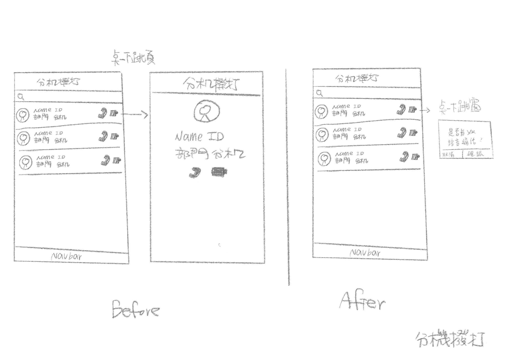

台塑iFPG員工專用APP
工作事項：視覺設計、協助線稿規劃
使用工具與軟體：Adobe illustrator、Adobe Xd
【APP介紹】
台塑員工專用APP，可以觀看員工與公司資料像是薪資、公司公告、表單申請，也可以利用APP通話及視訊聯絡其他同事。


【製作過程】
在企劃同仁線搞繪製完成時與相關人員討論優化流程（以下為討論時繪製的線搞）
Before:訊息只顯示10則，看更多則需要點MORE看更多，增加操作次數
After:訊息全部顯示出來，把link icon fixed在上方，這樣下滑時不會被滑走

Before:只有規劃icon連去各頁
After:資料視覺化；像是banner做成圖、個人用餐統計做成圖表；好閱讀且增加視覺豐富度

< Back to proflio
Before:點icon跳頁，到內頁點icon跳窗詢問是否通話；且內頁的顯示內容跟列表頁一樣，不需要再多一頁
After:icon點下去跳窗詢問就能通話，輕量化操作流程